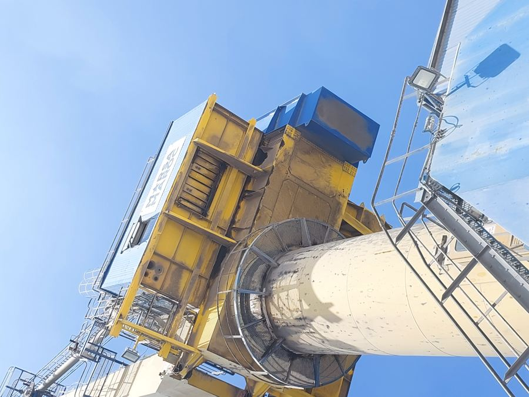

Snake game in C
The classic Snake game, written in C: the snake moves around a grid and grows each time it eats.
- C
An industrial study from my internship, and two programming projects.

Internship at Marsa Maroc, summer 2026
41 spare parts scored on five criteria and ranked from low to critical, so the maintenance team knows what to keep in stock.
Read the case studyThe classic Snake game, written in C: the snake moves around a grid and grows each time it eats.
A small simulator of electrical circuits written in C++, linking programming with my electronics department.